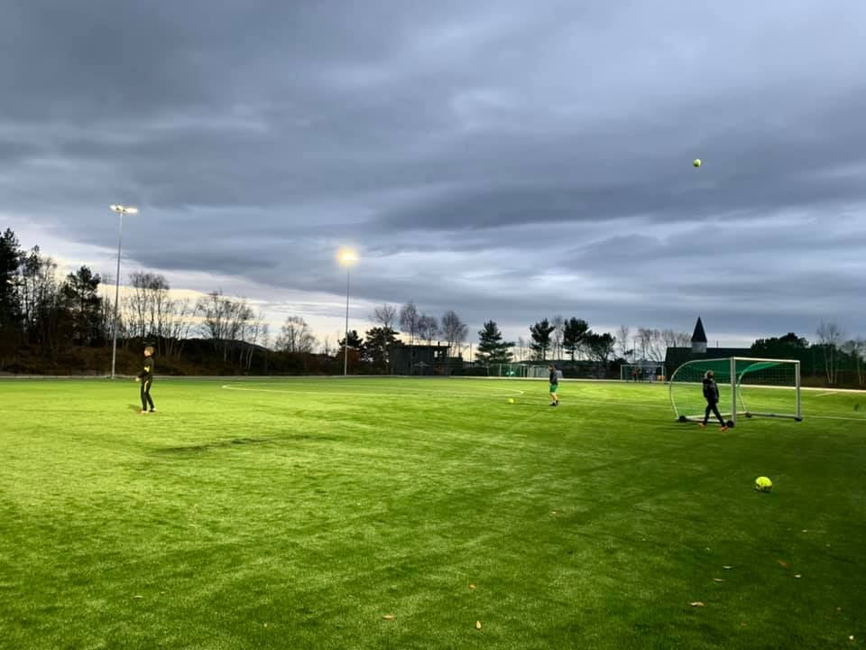

Kommende kamper (eksempel)
- 15FreVassøy G13 – BuøyKl. 18:00 · Vassøy idrettsanlegg
- 22FreVassøy J8 – HundvågKl. 17:30 · Vassøy idrettsanlegg
- 29FreVassøy G9 – MadlaKl. 18:00 · Vassøy idrettsanlegg
- 07LørHinna G13 – VassøyKl. 12:00 · Hinna kunstgress
G13 – eksempeltropp
- 1EvenKeeper
- 4SigridForsvar
- 5JonasForsvar
- 7LiveMidtbane
- 8HenrikMidtbane
- 10MathildeAngrep
- 11OskarAngrep
Navn er fiktive. Ekte spillerlister krever samtykke.
Faste treninger
- Mandag 17:00–18:15G9/J8 · Kunstgress
- Onsdag 17:30–19:00G13 · Kunstgress
- Torsdag 17:00–18:00Alle (åpen trening) · Kunstgress

Et lite lag
med stor betydning
med stor betydning

VASSØY designutkast · Data og bilder er illustrasjoner · Om appen